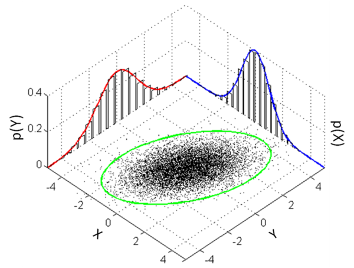

$\color{blue}{Updating \cdots}$
在概率或者统计中，多元正态分布（多元高斯分布）是一元正态分布的扩展。其定义为:
定性描述
一个$k$维的随机向量，如果其$k$个分量的任意线性组合所构成的那个随机变量，都是一元正态分布的话，那么我们就说这个$k$维随机向量是服从$k$元正态分布。
$k$元正态分布常用来描述、逼近 这样的一组随机变量：实值随机变量的集合，这些随机变量之间（可能）有相关关系，并这些随机变量所构成的每一个cluster的中心都在某一个均值（集合中若干随机变量的均值）附近。
图示如下

概念及参数化
$k-dim$ 随机变量$\mathbb{X}=[X_1，X_2，\cdots,X_k]^T$ 的高斯分布可以写作：
$\color{blue}{\mathbb{X} \sim \mathit{N(\mu,\Sigma)}\,\,Or\,\, \mathbb{X} \sim \mathit{N_k}(\mu,\Sigma) }$
其$k-dim$ 均值（mean vector）为：
$\color{blue}{\mu = E[\mathbb{X}]=[E[X_1],E[X_2],\cdots,E[X_k]]^T}$
其$k \times k-dim$的协方差矩阵（covariance matrix）为：
$ \color{blue}{\Sigma = E[(\mathbb{X}-E[\mathbb{X}])(\mathbb{X}-E[\mathbb{X}])^T]}\color{blue}{= [Cov[\mathbb{X_i},\mathbb{X_j}]; 1<i,j<k]} $
要点：
- 均值 $\color{blue}{\mu}$ 是一个 $k-dim$ 的向量
- 协方差矩阵 $\color{blue}{\Sigma}$ 是一个$k\times k$ 的对称矩阵
定义
一个随机向量 $\mathbb{X}=[X_1,X_2,\cdots,X_k]^T$ 如果满足如下3个等价条件，那么我们就说 $\mathbb{X}$ 服从多元高斯分布:
- 其分量（components）的每一个线性组合：$Y=a_1X_1 + a_2X_2 + \cdots +a_kX_k$ 均为一元正态分布。也就是说，对任何常数向量 $a\in \mathbb{R}^k$, 随机变量 $Y=a^T X$ 都有一个一元高斯分布。
- todo
- todo
属性
由定义立即可以得到以下结论：
- $\mathbb{X}$ 的每个分量都是正态分布的
- $\sum_{i=1}^{k} X_i = X_1+X_2+\cdots+X_k$ 是正态分布的
- 每个边缘分布均是正态分布